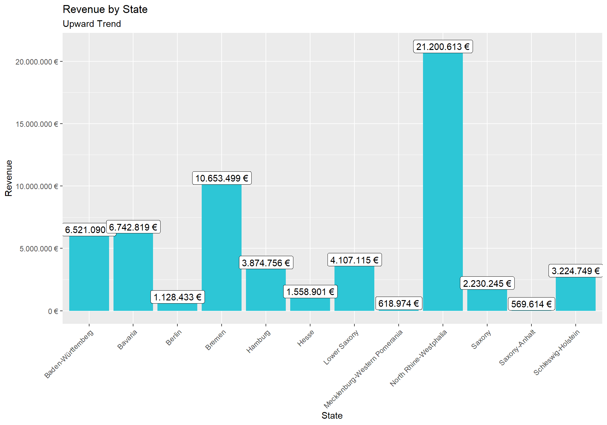
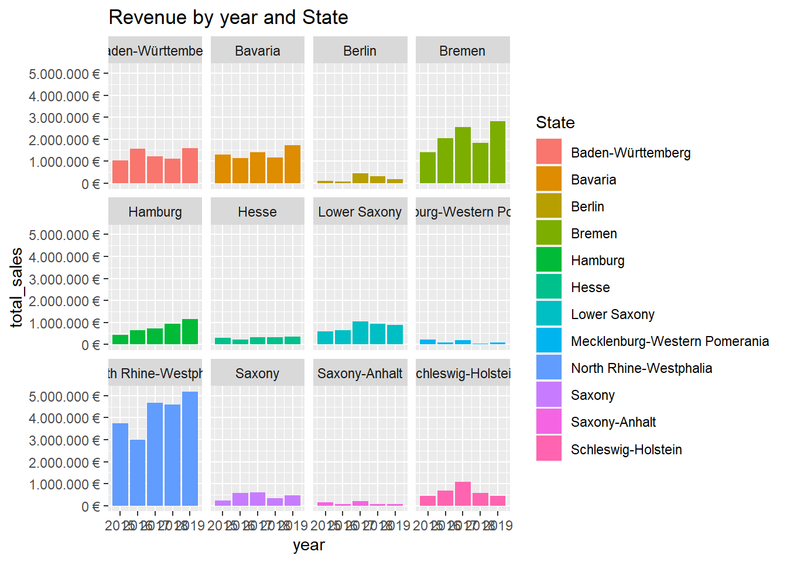
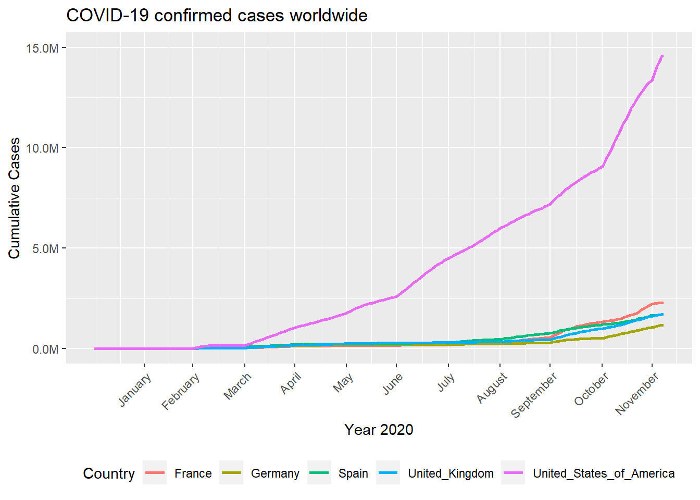
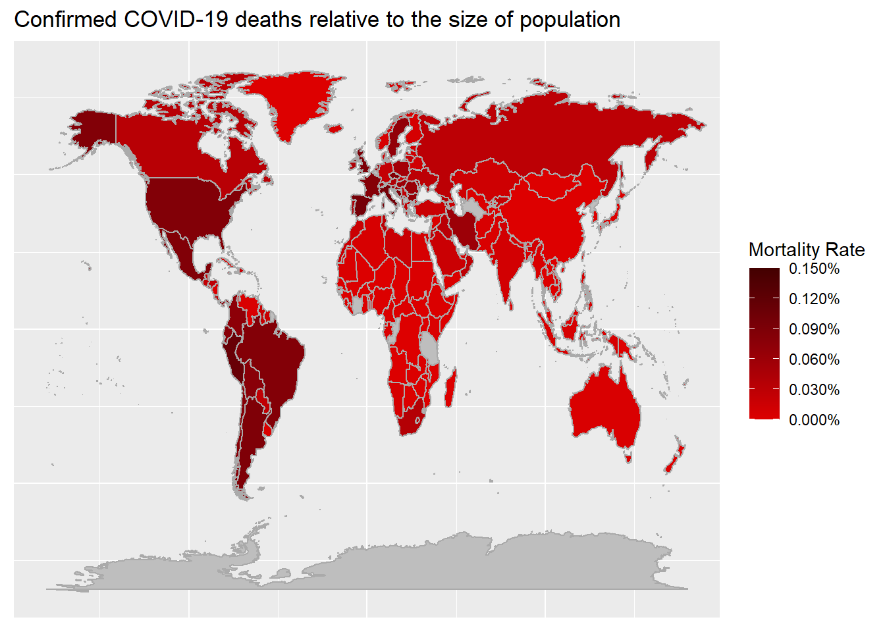

IMPORTANT: I couldn’t have the password protection for the journal, hence why is not appearing here. I hope is ok.
This is the journal for all the challenges done in the lecture of Data Science Basics. Here I will post all the solution for the challengens with some parts of code so is appreciatable what I did. If more information is wanted please look at the challenges files (e.g. challenge1.r, challenge2.r …) to see the complete code. For most of these solutions I already saved the wrangled tibbles in a rds file so There is not need to have all the code here.
Last compiled: 2020-12-06
Analyze the sales by location (state) with a bar plot:
salesByState<- readRDS("./DS_101/00_data/01_bike_sales/02_wrangled_data/salesByState.rds")
salesByState %>%
ggplot(aes(x = state, y = total_sales)) +
geom_col(fill = "#2DC6D6") +
geom_label(aes(label = sales_text)) +
scale_y_continuous(labels = scales::dollar_format(big.mark = ".",
decimal.mark = ",",
prefix = "",
suffix = " €")) +
labs(
title = "Revenue by State",
subtitle = "Upward Trend",
x = "State",
y = "Revenue"
) +
theme(axis.text.x = element_text(angle = 45, hjust = 1))
Analyze the sales by location and year:
salesByStateAndYear<- readRDS("./DS_101/00_data/01_bike_sales/02_wrangled_data/salesByStateAndYear.rds")
salesByStateAndYear %>%
# Set up x, y, fill
ggplot(aes(x = year, y = total_sales, fill = state)) +
# Geometries
geom_col() + # Run up to here to get a stacked bar plot
# Facet
facet_wrap(~ state) +
# Formatting
scale_y_continuous(labels = scales::dollar_format(big.mark = ".",
decimal.mark = ",",
prefix = "",
suffix = " €")) +
labs(
title = "Revenue by year and State",
fill = "State" # Changes the legend name
)
Last compiled: 2020-12-06
Get some data via an API. The selected API was random cats facts :v. (https://cat-fact.herokuapp.com/)
cat_facts = readRDS("DS_101/00_data/07_data_journal/catFacts.rds")
print(cat_facts)## # A tibble: 10 x 11
## used source type deleted `_id` updatedAt createdAt user text `__v`
## <lgl> <chr> <chr> <lgl> <chr> <chr> <chr> <chr> <chr> <int>
## 1 FALSE user cat FALSE 5c69~ 2020-08-~ 2019-02-~ 5a9a~ "Abr~ 0
## 2 FALSE user cat FALSE 59b1~ 2020-08-~ 2018-04-~ 5a9a~ "The~ 0
## 3 FALSE user cat FALSE 5b1b~ 2020-08-~ 2018-06-~ 5a9a~ "Dom~ 0
## 4 FALSE user cat FALSE 5b1b~ 2020-08-~ 2018-06-~ 5a9a~ "In ~ 0
## 5 FALSE api cat FALSE 591f~ 2020-08-~ 2018-08-~ 5a9a~ "Cat~ 0
## 6 FALSE user cat FALSE 58e0~ 2020-08-~ 2018-01-~ 58e0~ "Ori~ 0
## 7 FALSE api cat FALSE 591f~ 2020-08-~ 2018-01-~ 5a9a~ "Cat~ 0
## 8 FALSE user cat FALSE 5fc7~ 2020-12-~ 2020-12-~ 5fc7~ "Cat~ 0
## 9 FALSE user cat FALSE 5f86~ 2020-10-~ 2020-10-~ 5f86~ "The~ 0
## 10 FALSE user cat FALSE 5a45~ 2020-08-~ 2018-01-~ 5a9a~ "A c~ 0
## # ... with 2 more variables: status$verified <lgl>, $sentCount <int>Scrape one of the competitor websites of canyon (https://www.radon-bikes.de) and create a small database:
data_bikes_tbl = readRDS("DS_101/00_data/07_data_journal/data_bikes_tbl.rds")
print(data_bikes_tbl)## # A tibble: 115 x 5
## position model category price url
## <int> <chr> <chr> <chr> <glue>
## 1 1 JEALOUS8.0 mountainbike_~ 2599~ https://www.radon-bikes.de/en/mou~
## 2 2 JEALOUS9.0 mountainbike_~ 2999~ https://www.radon-bikes.de/en/mou~
## 3 3 JEALOUS10.0 mountainbike_~ 3999~ https://www.radon-bikes.de/en/mou~
## 4 4 JEALOUS10.0~ mountainbike_~ 5299~ https://www.radon-bikes.de/en/mou~
## 5 5 JEALOUS10.0 mountainbike_~ 3699~ https://www.radon-bikes.de/en/mou~
## 6 6 JEALOUS10.0~ mountainbike_~ 3799€ https://www.radon-bikes.de/en/mou~
## 7 7 NEWJEALOUSS~ mountainbike_~ 999 € https://www.radon-bikes.de/en/mou~
## 8 8 JEALOUSAL8.0 mountainbike_~ 999 € https://www.radon-bikes.de/en/mou~
## 9 9 JEALOUSAL8.~ mountainbike_~ 1299~ https://www.radon-bikes.de/en/mou~
## 10 10 JEALOUSAL9.0 mountainbike_~ 1499~ https://www.radon-bikes.de/en/mou~
## # ... with 105 more rowsIn this challenge I had some problems processing the patent.tsv, then I decided to use the files that were given by one of the tutors in mattermost. Here are the results. Also the .tsv files didn’t have information about the country then all of these solutions are for companies worldwide. If there was information about countries then, doing something like a filter where country was equal to US will have been enough to limit the search.
What US company / corporation has the most patents? List the 10 US companies with the most assigned/granted patents.
patent_dominance_tbl = readRDS("DS_101/00_data/07_data_journal/patent_dominance_tbl.rds")
print(patent_dominance_tbl)## # A tibble: 47,011 x 3
## # Groups: assignee_id [47,011]
## assignee_id organization num_patents
## <chr> <chr> <int>
## 1 org_ONzMjdbZXiKfw4L0cXl6 International Business Machines Corpora~ 7547
## 2 org_pCbqlmAg8wlWzoi18ITD Samsung Electronics Co., Ltd. 5835
## 3 org_eAKK85fawH0NS7AdXOig Canon Kabushiki Kaisha 4099
## 4 org_g8U335TH48QmGJOIQnNl Sony Corporation 3326
## 5 org_LKW5uc4C9BNTBapFdHzJ Microsoft Corporation 3165
## 6 org_LRPLF1XVb00MQdPndIbu Google Inc. 2668
## 7 org_EccJQIigrq4WyGinD0b8 Kabushiki Kaisha Toshiba 2656
## 8 org_adUSPYdjFbyHvoVakUrc QUALCOMM Incorporated 2597
## 9 org_dfvuIWENawcU6lTd1Z3w LG Electronics Inc. 2459
## 10 org_h5J6cVWyUahTuvNuksTb Panasonic Corporation 2218
## # ... with 47,001 more rowsWhat US company had the most patents granted in 2019? List the top 10 companies with the most new granted patents for 2019. As I used a limited set, I selected to use the month of July instead of year 2019
patent_dominance_july_tbl = readRDS("DS_101/00_data/07_data_journal/patent_dominance_july_tbl.rds")
print(patent_dominance_july_tbl)## # A tibble: 10 x 3
## # Groups: assignee_id [10]
## assignee_id organization num_patents
## <chr> <chr> <int>
## 1 org_ONzMjdbZXiKfw4L0cXl6 International Business Machines Corpora~ 772
## 2 org_pCbqlmAg8wlWzoi18ITD Samsung Electronics Co., Ltd. 584
## 3 org_eAKK85fawH0NS7AdXOig Canon Kabushiki Kaisha 447
## 4 org_g8U335TH48QmGJOIQnNl Sony Corporation 327
## 5 org_LKW5uc4C9BNTBapFdHzJ Microsoft Corporation 315
## 6 org_adUSPYdjFbyHvoVakUrc QUALCOMM Incorporated 278
## 7 org_dfvuIWENawcU6lTd1Z3w LG Electronics Inc. 256
## 8 org_EccJQIigrq4WyGinD0b8 Kabushiki Kaisha Toshiba 255
## 9 org_LRPLF1XVb00MQdPndIbu Google Inc. 254
## 10 org_h5J6cVWyUahTuvNuksTb Panasonic Corporation 240What is the most innovative tech sector? For the top 10 companies (worldwide) with the most patents, what are the top 5 USPTO tech main classes?
most_innovative_sector = readRDS("DS_101/00_data/07_data_journal/most_innovative_sector.rds")
print(most_innovative_sector)## # A tibble: 10 x 2
## mainclass_id num_patents
## <chr> <int>
## 1 257 40526
## 2 455 29481
## 3 370 25390
## 4 438 19804
## 5 709 18500
## 6 435 15690
## 7 514 14147
## 8 345 13466
## 9 348 12320
## 10 375 11348USPTO_top_5_tbl = readRDS("DS_101/00_data/07_data_journal/USPTO_top_5_tbl.rds")
print(USPTO_top_5_tbl)## # A tibble: 5 x 2
## mainclass_id num_patents
## <chr> <int>
## 1 257 7979
## 2 455 6191
## 3 370 5483
## 4 348 4113
## 5 709 4018So far the most difficult one, as the geom_map() was not talked much on the classbook. Thanks google.
filtered_covid_data_tbl = readRDS("DS_101/00_data/07_data_journal/filtered_covid_data_tbl.rds")
month_arr <- c(31,60,91,121,152,182,213,244,274,305,335)
filtered_covid_data_tbl %>%
ggplot(aes(cum_days, cum_cases, color = Country)) +
geom_line( size = 1) +
scale_y_continuous(name = "Cumulative Cases" , limits = c(0,15e6), labels = scales::unit_format(scale = 1e-6,
preix = "",
suffix = "M")) +
scale_x_continuous(name = "Year 2020", breaks = month_arr, labels = month.name[1:11]) +
theme(
axis.text.x = element_text(
angle = 45,
hjust = 1
),
legend.position = "bottom"
) +
labs(
title = str_glue("COVID-19 confirmed cases worldwide")
)
mortality_rate_tbl = readRDS("DS_101/00_data/07_data_journal/mortality_rate_tbl.rds")
world <- map_data("world")
plot_data <- world %>%
left_join(mortality_rate_tbl)
ggplot(plot_data, aes(map_id = region, fill = mort_rate))+
geom_map(map = plot_data, color = "#AAAAAA")+
expand_limits(x = c(180,-180), y = c(85,-85)) +
scale_fill_continuous(name = "Mortality Rate",
low = "#DD0000",
high = "#440000",
na.value = "grey",
limits = c(0,0.0015),
breaks = c(0,0.0003,0.0006,0.0009,0.0012,0.0015),
labels = scales::percent
) +
theme(
axis.title = element_blank() ,
axis.text = element_blank(),
axis.ticks = element_blank()
) +
labs(
title = str_glue("Confirmed COVID-19 deaths relative to the size of population")
)
#Data wrangling for salesByState
salesByState <- bike_orderlines_wrangled_tbl %>%
select("location","total_price") %>%
separate(col = "location", into = c("city","state"),sep = ", ") %>%
group_by(state) %>%
summarize("total_sales" = sum(total_price)) %>%
mutate(sales_text = scales::dollar(total_sales, big.mark = ".",
decimal.mark = ",",
prefix = "",
suffix = " €"))
#Data Wrangling for salesByStateAndYear
salesByStateAndYear <- bike_orderlines_wrangled_tbl %>%
select("order_date","location","total_price") %>%
separate(col = "location", into = c("city","state"),sep = ", ") %>%
mutate("year" = year(order_date)) %>%
group_by(state,year) %>%
summarize("total_sales" = sum(total_price)) %>%
mutate(sales_text = scales::dollar(total_sales, big.mark = ".",
decimal.mark = ",",
prefix = "",
suffix = " €"))## API REQUEST ---- CAT FACTS API
resp <- GET("https://cat-fact.herokuapp.com/facts/random?animal_type=cat&amount=10")
resp <- resp$content %>%
rawToChar() %>%
fromJSON() %>%
as_tibble()
## WEB SRAPPING ---- RADON-BIKES
url <- "https://www.radon-bikes.de/en/"
html <- url %>% read_html()
#Category links
bikes_category_links <- html %>%
html_nodes(css = ".megamenu__item>a") %>%
html_attr('href') %>%
discard(.p = ~stringr::str_detect(.x,"wear")) %>%
enframe(name = "position", value = "subdirectory") %>%
mutate(url = glue("https://www.radon-bikes.de{subdirectory}bikegrid/")) %>%
select(-subdirectory)
#Get info bikes function
get_bike_info <- function (url) {
html <- url %>% read_html()
#get base nodes
base_nodes <- html %>%
html_nodes(css = ".m-bikegrid__item>div>a")
#get more info links
more_info_links <- base_nodes %>%
html_attr('href') %>%
enframe(name = "position", value = "subdirectory") %>%
mutate(url = glue("https://www.radon-bikes.de{subdirectory}")) %>%
select(-subdirectory)
#get bike model name
bike_model <- base_nodes %>%
html_nodes(css = "div>.a-heading") %>%
html_text() %>%
stringr::str_extract("(?<=\\n ).*(?=\\n)") %>%
enframe(name = "position", value = "subdirectory") %>%
rename(model = subdirectory)
bike_model$model <- gsub(" ", "", bike_model$model, fixed = TRUE)
#get bike price
bike_price <- base_nodes %>%
html_nodes(css = "div>.currency_eur>.m-bikegrid__price--active") %>%
html_text() %>%
enframe(name = "position", value = "subdirectory") %>%
rename(price = subdirectory)
bikes_category_tbl <- bike_model %>%
mutate(category = url %>% stringr::str_extract("(?<=en/).*(?=/bikegrid/)") %>% str_replace_all("/","_")) %>%
left_join(bike_price) %>%
left_join(more_info_links)
}
url_vector <- bikes_category_links %>%
pull(url)
data_bikes_tbl <- url_vector %>%
map(get_bike_info) %>%
bind_rows()#1.Patent Dominance
patent_dominance_tbl <- assignee_tbl %>%
rename(assignee_id = id) %>%
left_join(patent_assignee_tbl) %>%
group_by(assignee_id,organization) %>%
summarise("num_patents" = n()) %>%
arrange(desc(num_patents))
#2.Recent patent acitivity
patent_dominance_july_tbl <- assignee_tbl %>%
rename(assignee_id = id) %>%
left_join(patent_assignee_tbl) %>%
rename(id = patent_id) %>%
left_join(patent_tbl) %>%
separate(col = date, into = c("year","month","day"),sep = "-") %>%
mutate(
year = as.numeric(year),
month = as.numeric(month),
day = as.numeric(day)
) %>%
select(-year,-day,-id,-num_claims) %>%
filter(month == 07) %>%
group_by(assignee_id,organization) %>%
summarise("num_patents" = n()) %>%
arrange(desc(num_patents))%>%
head(10)
##3.1 most innovative tech sector (mainclass with more patents)
most_innovative_sector <- uspc_tbl %>%
group_by(mainclass_id) %>%
summarise("num_patents" = n()) %>%
arrange(desc(num_patents))%>%
head(10)
##3.2 top 5 USPTO tech main classes from 10 top companies worldwide
patent_dominance_10_tbl <- assignee_tbl %>%
rename(assignee_id = id) %>%
left_join(patent_assignee_tbl) %>%
group_by(assignee_id,organization) %>%
summarise("num_patents" = n()) %>%
arrange(desc(num_patents)) %>%
head(10)
assignee_id_10 <- patent_dominance_10_tbl$assignee_id
USPTO_top_5_tbl <- assignee_tbl %>%
rename(assignee_id = id) %>%
left_join(patent_assignee_tbl) %>%
left_join(uspc_tbl) %>%
filter(assignee_id %in% assignee_id_10) %>%
filter(!is.na(mainclass_id)) %>%
group_by(mainclass_id) %>%
summarise("num_patents" = n()) %>%
arrange(desc(num_patents)) %>%
head(5)#PART 1
covid_data_tbl <- covid_data_tbl %>%
rename(Country = countriesAndTerritories, Continent = continentExp)
filtered_covid_data_tbl <- covid_data_tbl %>%
filter(Country %in% c("Germany","United_Kingdom","France","Spain","United_States_of_America")) %>%
arrange(month) %>%
arrange(Country) %>%
select(Country,month,cases) %>%
group_by(Country) %>%
mutate(cum_cases = cumsum(cases)) %>%
mutate(month_name = month.name[month]) %>%
mutate(cum_days = 1:n())
# PART 2
mortality_rate_tbl <- covid_data_tbl %>%
select(Country,cases,deaths,geoId,countryterritoryCode,popData2019,Continent) %>%
group_by(Country,geoId,countryterritoryCode,popData2019,Continent) %>%
summarise("total_deaths" = sum(deaths)) %>%
mutate(mort_rate = total_deaths/popData2019) %>%
mutate(mort_rate_percentage = scales::percent(mort_rate, accuracy = 1e-3)) %>%
rename(region = Country)